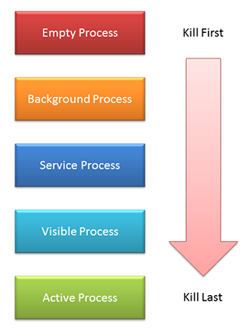

Android Process:-
In Android a process is an instance of a application running on an Android device.
All Android apps run in their own process and by default, in a single thread.
Since each Android Apps runs in its own process, all apps are isolated from each other.
Thread:-
A thread is the smallest unit of processing that can be performed in an OS.
A thread exists within a process - that is, a single process may contain multiple threads.
Components of Android Application
All android apps are built using 4 key components:-
- Activities –
Typically the screen that the user sees.
- Services –
A component that does work in the background.
- Content providers –
A component that manages a shared set of data.
- Broadcast receivers –
A component that responds to a broadcast message.
Note:-
We can use another apps component to implement a particular functionality by using intent.
If we start a component in another app, it runs in the process of that app, not that of our apps process.
Whenever our app starts, and none of its components are running, the system starts a new process.
All processes are kept alive in memory for as long as possible.
Even when you exit an app, its processes may be kept alive in memory – maybe the process is shared by another app, and in some cases the process is kept alive in case it’s needed again.
Processes are killed when memory is needed for the more important processes.As the process are killed so does the components associated
with that process gets killed too.
Android follows a set of rules when deciding which processes to kill.The rules are based on two facts:
- How important is the process to the user’s current experience
- How long has it been since the process was last used.
Process priority structue:-

Active process/Foreground Process –
Active processes have components that the user is interacting with.
A process is considered to be in the foreground if any of the following conditions hold:
- It is running an Activity at the top of the screen that the user is interacting with (its onResume() method has been called).
- It has a BroadcastReceiver that is currently running (its BroadcastReceiver.onReceive() method is executing).
- It has a Service that is currently executing code in one of its callbacks (Service.onCreate(), Service.onStart(), or Service.onDestroy()).
Visible process –
These have visible activities which are not in the foreground. The user is not currently interacting with them.
A process is considered to be visible if any of the following conditions hold:
- It is running an Activity that is visible to the user on-screen but not in the foreground (its onPause() method has been called). This may occur, for example, if the foreground Activity is displayed as a dialog that allows the previous Activity to be seen behind it.
- It has a Service that is running as a foreground service, through Service.startForeground() (which is asking the system to treat the service as something the user is aware of, or essentially visible to them).
- A Service which is attached to visible process.
Service process –
They have running services and are treated as an Active process.
A service that has been started with the startService() method.
Note:-
Though these processes are not directly visible to the user, they are generally doing things that the user cares about (such as background network data upload or download).
Background process–
These contain activities that are not visible. There is no user interaction with them. They can be killed at any time. These processes are killed according to the last-seen-first-killed principle.
Empty process –
They don’t have any active application components. They’re only kept alive to improve start-up time when next the component is needed. These processes are killed when resources are needed.